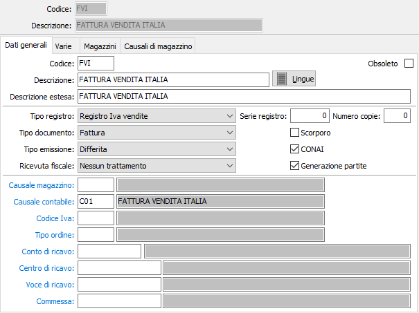
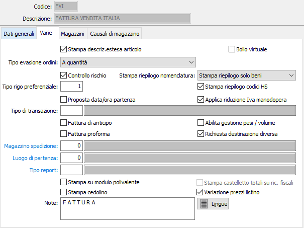
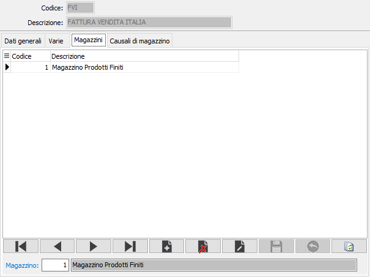
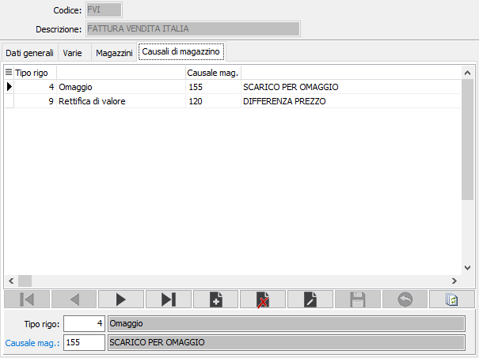

Causali fatture
Le causali fatture vengono utilizzate al momento dell’emissione di una fattura o di una nota di accredito e determinano il tipo di documento da emettere. Le informazioni presenti in una causale di fatturazione consentono di gestire correttamente l’imputazione in contabilità, l’eventuale attivazione del magazzino in caso di fattura accompagnatoria, ecc.
La finestra video di manutenzione Causali di fatturazione si articola su 4 pagine video, suddivise in due sezioni. La sezione superiore rimane invariata in tutte le pagine video e contiene le informazioni anagrafiche della causale stessa.
Linguetta Dati generali

CODICE: codice alfanumerico di 3 caratteri, a libera scelta dell'utente, per individuare la causale attiva. Sul campo sono attive le funzioni di ricerca (F9) sulla tabella stessa.
OBSOLETO: flag attivabile dall’utente per inibire il possibile utilizzo dell’elemento di tabella in esame nelle successive transazioni.
DESCRIZIONE: campo alfanumerico di 30 caratteri per inserire la descrizione della causale attiva. Questa descrizione viene riportata anche nella stampa del documento stesso.
DESCRIZIONE ESTESA: campo alfanumerico di 60 caratteri per inserire la descrizione estesa della causale attiva ad uso interno dell’utente. Questa descrizione non viene stampata sui documenti ma viene visualizzata nelle viste.
TIPO REGISTRO: list box per indicare il registro obbligatorio a cui verrà imputato il documento generato dalla causale attiva. Valori possibili: libro giornale, registro Iva vendite, registro Iva vendite in sospensione d'imposta, registro corrispettivi, registro Iva acquisti, registro Iva acquisti in sospensione d'imposta.
SERIE REGISTRO: identifica in numero di sezionale Iva a cui le fatture verranno attribuite in fase di contabilizzazione.
NUMERO COPIE: Indicare il numero di copie da stampare, se zero saranno stampate le copie previste sull'anagrafica del cliente.
TIPO DOCUMENTO: list box per definire il tipo di documento generato dalla causale attiva. Valori possibili: fattura, nota di debito, nota di credito, autofattura, fattura ad Iva differita.
TIPO EMISSIONE: list box per definire il tipo di emissione del documento generato dalla causale attiva. Valori possibili: differita, accompagnatoria.
RICEVUTA FISCALE: list box per definire se la causale riguarda le ricevute fiscali ed il tipo di ricevuta. Le tipologie previste sono le seguenti:
Ricevuta fiscale di beni: è il caso normale di emissione di ricevuta fiscale per vendita di beni o prestazione di servizi; la registrazione contabile va a generare un movimento di corrispettivo per ogni ricevuta emessa (il raggruppamento viene effettuato in fase di stampa registro corrispettivi).
Ricevuta fiscale di servizi: si tratta di una ricevuta fiscale che se incassata va ad alimentare il normale registro corrispettivi, altrimenti viene registrata come Iva differita (e in fase di liquidazione Iva) non viene conteggiata fino all’effettivo incasso della ricevuta fiscale.
Fattura fiscale a seguito di ricevuta fiscale: in questo caso viene emessa una fattura dopo che era stata emessa e contabilizzata una ricevuta fiscale; il documento viene contabilizzato ma sia dal punto di vista contabile che dal punto di vista Iva non determina alcuna variazione.
Incasso ricevuta fiscale per beni: in questo caso la ricevuta fiscale determina all’atto della registrazione contabile un movimento di incasso sulla ricevuta fiscale emessa senza essere stata pagata; in fase di emissione del documento è possibile selezionare per l’incasso le ricevute fiscali contabilizzate non incassate.
Incasso ricevuta fiscale di servizi: valgono gli stessi concetti espressi per il caso precedente; tuttavia si differenzia dal precedente per il trattamento dell’Iva, poiché oltre al normale trattamento a livello di partite (si tratta di un incasso), poiché le ricevute che possono essere incassate sono quelle relative a servizi (per cui ad Iva differita) e quindi viene generato anche il giroconto dall’Iva differita all’Iva corrispettivi, oltre che il movimento sul registro Iva vendite.
Ricevuta di incasso per acconto prestazioni: si tratta di una ricevuta di incasso che genera movimento contabile di anticipo.
SCORPORO: Definisce se il documento è soggetto a scorporo dell'Iva dal totale del documento in fase di registrazione (casella con segno di spunta). In questo caso i prezzi inseriti nel documenti saranno al lordo di Iva.
CONAI: definisce se in fase di stampa deve essere riportata la dicitura relativa al CONAI, casella con segno di spunta.
GENERAZIONE PARTITE: abilita, se presente la spunta, la generazione delle partite aperte clienti da parte del documento generato dalla causale attiva.
CAUSALE MAGAZZINO: codice alfanumerico di 3 caratteri, presente nella tabella Causali di magazzino, che individua i parametri del movimento di magazzino generato automaticamente dal documento attivo. L’informazione può essere omessa in caso di assenza della procedura Gestione magazzino oppure se non si intende generare automaticamente movimenti di magazzino. Sul campo sono attive le funzioni di ricerca (F9) e manutenzione (CTRL+W) sulla tabella stessa.
CAUSALE CONTABILE: codice alfanumerico di 3 caratteri, presente nella tabella Causali contabili, che definisce i parametri del movimento contabile generato dal documento attivo all’atto della contabilizzazione delle fatture. L’informazione può essere omessa in caso di assenza della procedura Contabilità. Sul campo sono attive le funzioni di ricerca (F9) e manutenzione (CTRL+W) sulla tabella stessa.
CODICE IVA: eventuale codice alfanumerico di 3 caratteri, presente nella tabella Aliquote iva, che verrà forzato nel codice esenzione del documento attivo in modo da essere impostato su tutte le righe in sostituzione dell’aliquota Iva presente in anagrafica prodotti. Sul campo sono attive le funzioni di ricerca (F9) e manutenzione (CTRL+W) sulla tabella stessa.
TIPO ORDINE: codice alfanumerico di 3 caratteri, presente nella tabella Tipologie ordini, che individua la tipologia di ordini che possono essere evasi tramite il documento attivo. L’informazione può essere omessa in caso di assenza della procedura Gestione ordini di vendita oppure se non si intende riservare il documento attivo all’evasione di una specifica tipologia di ordini. Sul campo sono attive le funzioni di ricerca (F9) e manutenzione (CTRL+W) sulla tabella stessa.
CONTO DI RICAVO: eventuale codice alfanumerico di 8 caratteri, presente in piano dei conti, per definire il sottoconto contabile di ricavo a cui verrà accreditato l’imponibile della fattura o della nota di credito. Sul campo sono attive le funzioni di ricerca (F9) e manutenzione (CTRL+W) sulla tabella stessa.
CENTRO DI RICAVO: campo significativo solo in presenza del modulo Contabilità analitica opportunamente configurato. Può contenere un codice alfanumerico di 15 caratteri, per definire il centro di ricavo a cui verrà accreditato l’imponibile della fattura. Sul campo sono attive le funzioni di ricerca (F9) e manutenzione (CTRL+W) sulla tabella stessa.
VOCE DI RICAVO: campo significativo solo in presenza del modulo Contabilità analitica opportunamente configurato. Può contenere un codice alfanumerico di 15 caratteri, per definire la voce di ricavo a cui verrà accreditato l’imponibile della fattura. Sul campo sono attive le funzioni di ricerca (F9) e manutenzione (CTRL+W) sulla tabella stessa.
COMMESSA: campo significativo solo in presenza del modulo Contabilità analitica opportunamente configurato. Può contenere un codice alfanumerico di 15 caratteri, per definire la commessa a cui verrà accreditato l’imponibile della fattura. Sul campo sono attive le funzioni di ricerca (F9) e manutenzione (CTRL+W) sulla tabella stessa.
Linguetta Varie

STAMPA DESCRIZIONE ESTESA ARTICOLO: Indica se sulla fattura deve essere riportata e stampata la descrizione estesa dell'articolo, casella con segno di spunta.
BOLLO VIRTUALE: Se spuntato, nel caso in cui la fattura sia soggetta a bollo, l'importo di bollo eventualmente addebitato viene contabilizzato sull'apposito conto "Spese bolli virtuali" (a condizione che tale conto sia stato compilato).
TIPO EVASIONE ORDINI: Definisce se un eventuale ordine dovrà essere evaso a quantità oppure a valore; valori possibili: a quantità, a valore.
CONTROLLO RISCHIO: Definisce se al termine della registrazione della fattura deve essere fatto un ulteriore controllo sulla situazione del cliente, casella con segno di spunta.
STAMPA RIEPILOGO NOMENCLATURA: Consente di stampare, in coda al documento, un riepilogo pesi/colli per nomenclatura combinata; è possibile non stampare il riepilogo, stamparlo solo per le nomenclature relative a beni, solo per le nomenclature relative a servizi o sempre.
TIPO RIGO PREFERENZIALE: Indica il tipo rigo da proporre in fase di emissione della fattura. Sul campo sono attive le funzioni di ricerca (F9).
PROPOSTA DATA/ORA PARTENZA: Se spuntato inserisce automaticamente la data e l'ora di inizio trasporto nei rispettivi campi del documento.
Stampa riepilogo codici HS: Consente di stampare, in coda al documento, un riepilogo delle codifiche HS legate agli articoli presenti in fattura che riporta per ogni codifica/Um anche il totale quantità e valore.
APPLICA RIDUZIONE IVA MANODOPERA: Se spuntato indica che il documento creato con questa causale è soggetto ad IVA agevolata su ristrutturazioni.
TIPO TRANSAZIONE: definisce il tipo transazione ai fini INTRASTAT. Sul campo sono attive le funzioni di ricerca (F9).
FATTURA DI ANTICIPO: attivo se previsto in configurazione vendite; definisce se la causale è relativa a fatture di anticipo (casella con segno di spunta).
Abilita gestione pesi / volume: Attivo solo in caso di causale con tipo emissione "differita". Se spuntato nella linguetta riepilogo totali del documento saranno resi visibili i campi relativi al peso ed al volume.
FATTURA PROFORMA: definisce se la causale è relativa a fatture proforma (casella con segno di spunta).
RICHIESTA DESTINAZIONE DIVERSA: definisce se deve essere richiesta la destinazione diversa (casella con segno di spunta); l'opzione è valida solo per i documenti di tipo differito e deve essere spuntato se si intende utilizzare il raggruppamento per cliente/destinazione in fase di fatturazione Ddt.
MAGAZZINO SPEDIZIONE: codice numerico, presente nella tabella Magazzini, che individua il magazzino aziendale di partenza della merce. L’informazione è facoltativa e viene utilizzata per definire il magazzino che verrà scaricato della merce. In caso di mancata compilazione di questo campo, l’informazione dovrà essere digitata al momento dell’emissione del documento. Anche in caso di presenza di valori in questo campo, tuttavia, l’indicazione del magazzino di destinazione preferenziale nella causale potrà essere modificata dall’utente all’atto dell’emissione del documento. Sul campo sono attive le funzioni di ricerca (F9) e manutenzione (CTRL+W) sulla tabella stessa.
LUOGO DI PARTENZA: Definisce, se inserito, il luogo di partenza della merce. Sul campo sono attive le funzioni di ricerca (F9) e manutenzione (CTRL+W) sulla tabella stessa.
TIPO REPORT: consente di specificare un tipo di report specifico per i documenti che saranno emessi utilizzando questa causale. Sul campo sono attive le funzioni di ricerca (F9).
STAMPA SU MODULO POLIVALENTE: definisce la stampa deve essere eseguita sul modulo di stampa polivalente (casella con segno di spunta).
STAMPA CEDOLINO: definisce se stampare il cedolino provvigioni sulla fattura, qualora l'agente lo gestisca (casella con segno di spunta).
STAMPA CASTELLETTO TOTALI SU RIC. FISCALI: Se spuntato e in caso di "Ricevuta fiscale per beni / servizi (no fattura)" consente di stampare il castelletto di chiusura.
VARIAZIONE PREZZI LISTINO: definisce se dai documenti emessi con questa causale è consentito modificare i prezzi di listino in base a quanto definito sull'anagrafica dell'intestatario (casella con segno di spunta).
NOTE: campo note a disposizione dell’utente.
Linguetta Magazzini
La linguetta consente di elencare i magazzini di partenza o di destinazione che possono essere interessati dalla causale attiva.
La sua compilazione è pertanto significativa solo se l’azienda effettua consegne da diversi magazzini. Nel caso in cui venga gestito un solo magazzino, la compilazione della linguetta è assolutamente inutile.

MAGAZZINO: codice numerico, presente nella tabella Magazzini, che individua il magazzino di possibile utilizzo con la causale attiva. Sul campo sono attive le funzioni di ricerca (F9) e manutenzione (CTRL+W) sulla tabella stessa.
Linguetta Causali di magazzino
La finestra, attiva solo nella versione OS1 Enterprise, permette di associare al singolo tipo rigo una specifica causale per generare il magazzino, diversa dalla causale principale.

TIPO RIGO: Indica il tipo rigo da associare alla causale. Sul campo sono attive le funzioni di ricerca (F9).
CAUSALE MAGAZZINO: codice alfanumerico di 3 caratteri, presente nella tabella Causali di magazzino, che individua i parametri del movimento di magazzino generato automaticamente dal documento attivo per il tipo rigo richiesto. Sul campo sono attive le funzioni di ricerca (F9) e manutenzione (CTRL+W) sulla tabella stessa.